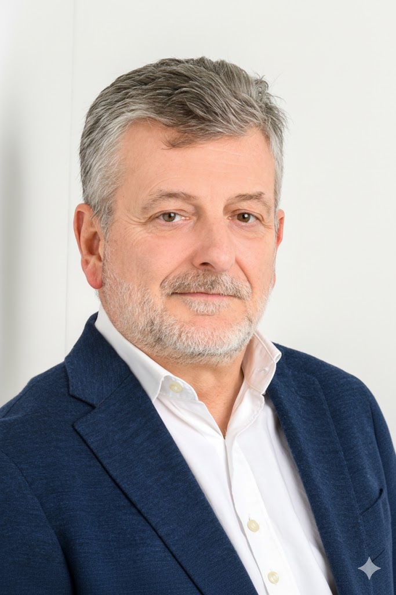

Patrick
Langlais
Top 20 IA France 2025 · Fondateur Think'UP · 35 ans finance & gestion des risques
"L'IA ne remplace pas vos équipes. Elle leur rend le temps que les tâches invisibles leur volent chaque semaine."
Patrick Langlais apporte une différence rare dans l'univers du conseil IA : 35 ans d'expérience opérationnelle en finance de marché et gestion des risques chez HSBC. Head of Control Office Global Markets, Senior Trader sur les obligations d'État européennes. Il sait ce que "ROI" signifie réellement — pas comme concept marketing.
C'est cette expérience — piloter des risques, quantifier des impacts, prioriser sous contrainte — qui a donné naissance à la méthode Index Iceberg. Appliquer à l'IA la rigueur du contrôle financier.
35 ans de pilotage,
maintenant au service de l'IA
La légitimité de Patrick Langlais ne vient pas d'une certification IA. Le meilleur moyen de la vérifier reste de poser les cinq questions qui filtrent un consultant IA. Elle vient de 35 ans à piloter des risques réels dans un environnement où l'erreur d'analyse a des conséquences immédiates et chiffrées.
Au croisement du
métier et de l'IA
Une combinaison rare : la rigueur de 35 ans en finance de marché + la maîtrise des outils IA actuels.
"Simple. Humaine. Utile. Orientée ROI. L'IA propose. Vous validez. Vos équipes avancent."
Un échange direct, sans intermédiaire
Patrick Langlais est votre interlocuteur unique du premier diagnostic à la mesure du ROI.